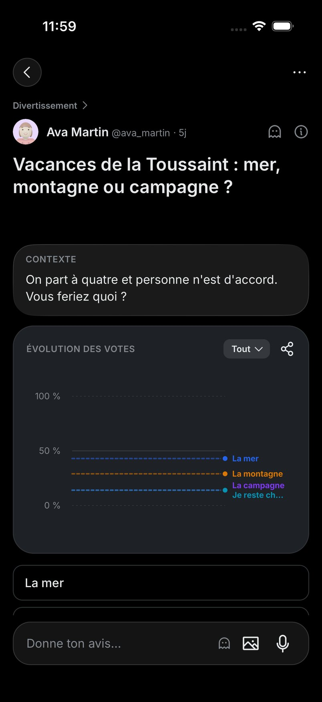
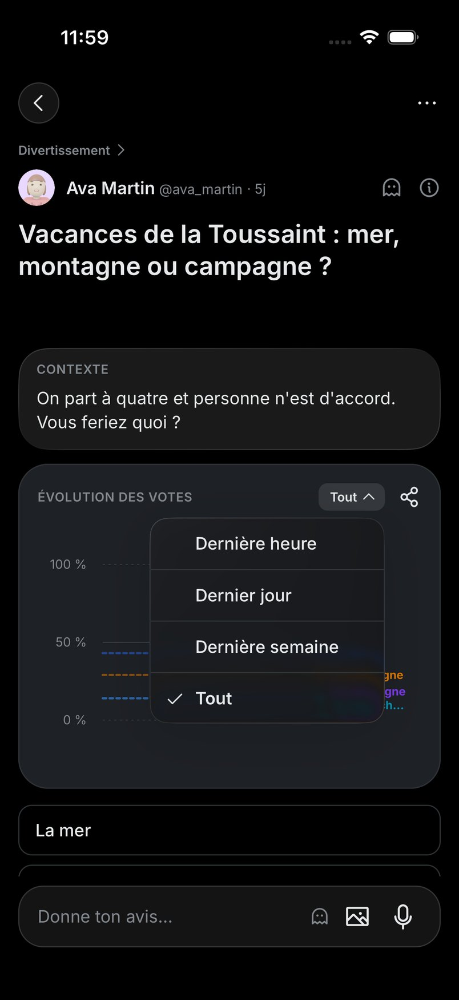
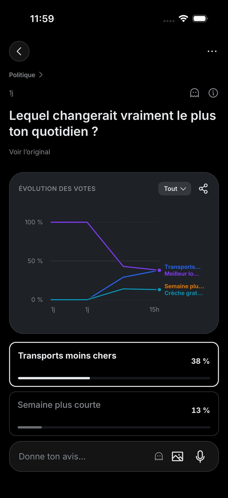
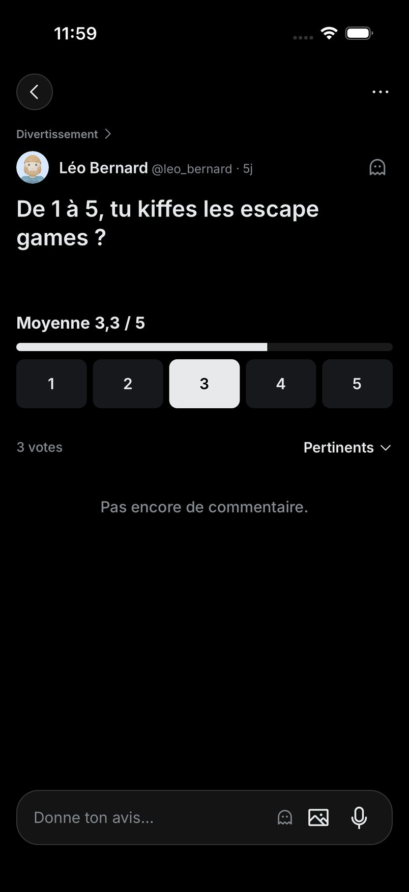
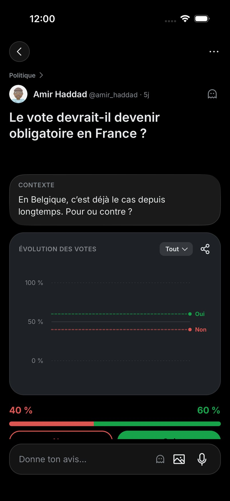

Le graphique quand on ouvre un take : 10 maquettes
05/10/2026 · TAK-357 · Des propositions à choisir : c'est Adam qui décide.
Le point de départ. Sur le take ouvert, la carte « Évolution des votes » fait 283 pt sur un écran de 874 pt. Elle passe avant les boutons de vote, et on ne voit aucun commentaire sans défiler. L'idée, c'est que la courbe ne gêne plus ceux qui ne la regardent pas, et qu'elle reste à un toucher pour les autres.
Top 3 du classement Jev
Jev a noté chaque proposition sur trois points. D'abord, la place qu'elle retire au graphique pour qui ne s'y intéresse pas (de 0 à 4). Ensuite, si on obtient la courbe en un toucher évident (de 0 à 3). Enfin, si elle ressemble à ce que font X et Instagram (de 0 à 3). Chaque note est ramenée sur 1, puis les trois sont moyennées à poids égal. Ce classement aide à choisir, il ne tranche pas.
| # | Proposition | Place retirée /4 | Un toucher /3 | Comme X et Insta /3 | Total |
|---|
Ce que font les grandes apps (seulement ce qu'une source dit) :
- X : après le vote, on voit les résultats du moment, son choix coché, le nombre de votes et le temps restant. Les sources ne parlent d'aucune courbe dans le temps (Buffer). La page d'aide de X a répondu 403.
- Instagram : une fois qu'on a voté à un sondage de story, on voit quelle réponse mène, sous forme de pourcentages. La source ne décrit aucun historique (SocialRails).
- Threads : on reçoit une notification à la fin du sondage pour voir le résultat final (Social Media Today). Aucune courbe n'est décrite.
- Kalshi : le graphique a des durées (LIVE, 1H… ALL). Il s'affiche en entier dans la vue de trading et « sous une forme compacte » dans les tuiles. La page ne dit pas si on peut le masquer (aide Kalshi Pro).
- Robinhood : sur la fiche d'une action, on change la durée de la courbe et on garde le doigt appuyé pour lire un point. La page ne parle ni de plier ni d'agrandir (aide Robinhood).
- Polymarket : le site répond 451 (indisponible pour raisons légales), et l'article de Finextra répond 403. Rien n'est donc vérifié de première main. Un guide tiers dit que l'app mobile montre « moins de graphiques » au premier coup d'œil que sur ordinateur (polymarket.tips). C'est une source non officielle.
- Manifold : rien de vérifiable trouvé sur la place de la courbe dans une question.
Les autres types de takes, en sombre
Vraies captures du 05/10 (11:59 à 12:00), montrées telles quelles, dans les deux thèmes. Elles disent ce que chaque proposition devra tenir selon le type de take.





Ce que les maquettes ne couvrent pas
- Le clair part d'un take Oui/Non sans photo (« Un congé paternité… », boucle du 05/10 à 09:34, sur le code du jour). Le sombre part d'un autre take Oui/Non (« Le vote devrait-il devenir obligatoire en France ? », 12:00). Chaque thème montre les chiffres de son propre take.
- Les commentaires viennent d'un autre take, capturé à 07:38 : c'est la seule capture où ils se voient. Celle de 09:34 a été prise en pleine transition, elle est inutilisable. En sombre, ces commentaires et la barre de titre défilée (proposition 10) restent des captures claires inversées.
- En sombre, les boutons Non / Oui sont redessinés aux couleurs de la capture : sur celle-ci, le champ du bas les cache presque entièrement.
- Les états « avant ton vote » (proposition 6) sont redessinés, pas capturés : boutons au contour seulement, comme dans le fil.
- Les maquettes ne sont dessinées que sur des takes Oui/Non. Les autres types sont montrés plus haut, tels qu'ils sont aujourd'hui.
Sources : captures de la boucle de régression du 05/10 (iPhone, 402 × 874 pt) et cotes lues dans TakeBackFace.tsx, OddsChart.tsx et design-tokens.ts de main. Classement fait par Jev (TypeSafe).